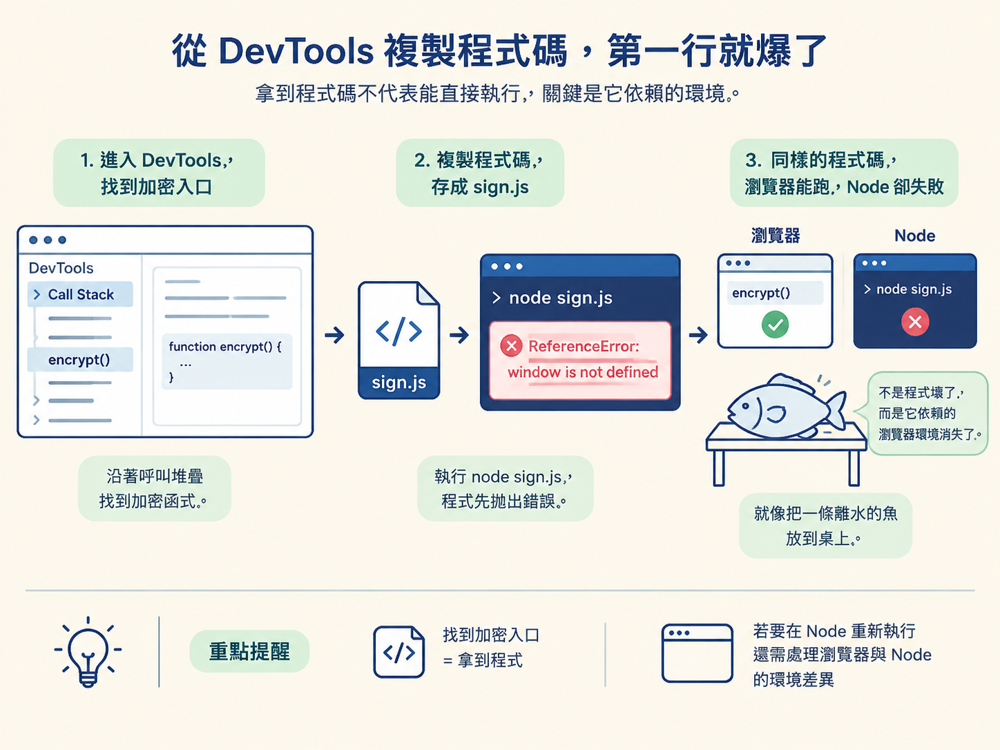
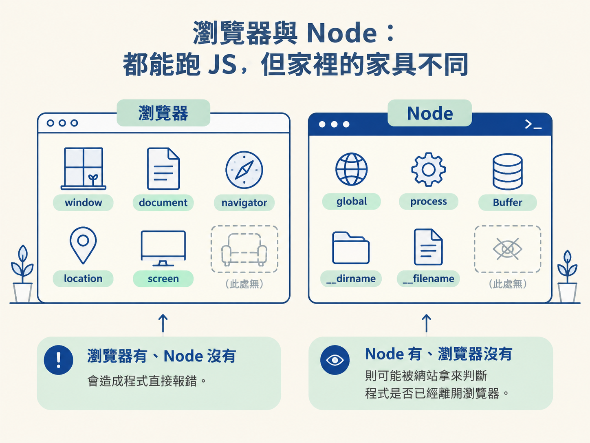
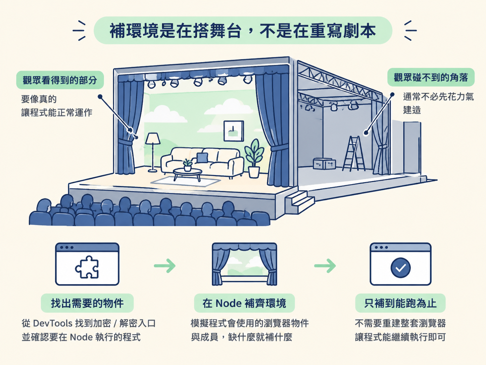

理解瀏覽器加密 JS 在 Node 執行失敗的兩個根因：瀏覽器與 Node 的頂級物件不同，以及 Node 專屬識別字會暴露執行環境。你也會知道「補環境」適合解決什麼問題，又不能取代什麼工作。
想像你正在分析一個網站。你先抓到請求，接著發現參數經過前端加密，於是打開 DevTools，沿著呼叫堆疊一路追到加密入口。
你把那段 JS 複製下來，存成 sign.js，再回到終端機執行 node sign.js。結果加密函式還沒真正開始計算，程式就先丟出 ReferenceError: window is not defined。
奇怪的是，同一段程式碼放回 DevTools 主控台，卻能正常執行。就像把一條離水的魚放到桌上：魚沒有突然壞掉，只是它原本依賴的環境不見了。
這正是「抓取 → 遇到反爬 → 逆向前端程式碼」之間的重要接點。找到加密入口，只代表你拿到了程式；如果想把它搬到 Node 重複執行，還得處理瀏覽器與 Node 的環境差異。

瀏覽器和 Node 都能執行 JavaScript，但它們提供的全域環境並不相同。
在瀏覽器頁面中，全域物件通常是 window。以前端常見的 var 宣告來說，寫下 var yuan = 10; 後，通常也能透過 window.yuan 讀到它。頁面程式還可以直接使用 document、navigator、location 等瀏覽器物件。
到了 Node，全域物件換成 global。Node 預設沒有頁面，也沒有瀏覽器視窗，因此不會平白提供 window、document 或 navigator。
| 比較項目 | 瀏覽器 | Node |
|---|---|---|
| 全域物件 | window | global |
| DOM 物件（如 document） | 有 | 預設沒有 |
| navigator、location、screen | 有 | 預設沒有 |
| Node 專屬識別字 | 沒有 | global、process、Buffer、__dirname、__filename |
這張表可以從兩個方向閱讀。瀏覽器有、Node 沒有的物件，會造成程式直接報錯；Node 有、瀏覽器沒有的識別字，則可能被網站拿來判斷程式是否已經離開瀏覽器。

第一個根因最容易在終端機裡看到。原始程式假設自己住在 window 底下，但 Node 提供的是 global。只要程式讀取 window.xxx，就可能因為 window 不存在而立刻停止。
常見的補法，是先在 Node 裡建立 window，並讓它指向 global：
window = global
window.window = window
window.self = window
window.top = window第一行把 window 接到 global。這有點像替舊插頭加上轉接頭：原始程式仍然使用熟悉的 window，但背後實際接到的是 Node 的全域物件。
後面三行則讓 window.window、self 與 top 都指向同一個物件。前端程式有時不會直接讀取 window，而是繞道透過這些名稱取得最上層視窗。若只補其中一個入口，程式仍可能在其他地方露出破綻。
不過，這四行只補了最外層的關係。若程式接下來還會讀取 document、navigator 或更深層的成員，仍然需要依照實際使用情況繼續補齊。
第二個根因比較不直觀。網站不一定只問「這裡有沒有 window」，也可能反過來問「這裡是不是有 process 或 global」。
這就像進門時不只檢查你有沒有門票，還檢查你口袋裡是否帶著不該出現在現場的證件。即使已經補出 window，只要 Node 專屬的識別字仍能被讀到，環境檢測還是可能發現異常。
因此，有些補環境檔案會在建立 window 後，再處理 process、global、Buffer 等 Node 痕跡。目的不是讓 Node 真的變成瀏覽器，而是避免目標程式輕易取得「目前正在 Node 執行」的證據。
這裡不能看到名稱就隨手 delete。這些識別字可能也是 Node 本身或其他程式碼需要的工具，刪錯之後，目標 JS 還沒跑起來，執行環境反而先被拆壞。是否要處理、處理哪些對象，都應該依目標程式實際檢查的內容決定。
把兩個根因放在一起看，「補環境」的角色就很清楚了。當你已經從 DevTools 找到加密或解密入口，並希望把原始 JS 搬到 Node 執行時，你要在 Node 裡模擬它真正會使用的瀏覽器物件與成員。
這不是完整重建一套瀏覽器。比較實際的做法，是缺什麼就補什麼，而且只補到目標程式能繼續執行的程度。像替舞台搭景一樣，觀眾看得到的部分要像真的；程式永遠碰不到的角落，通常不必先花力氣建造。

| 做法 | 適合的情況 | 限制 |
|---|---|---|
| 在 Node 補瀏覽器環境 | 已找到可執行的原始 JS，希望直接利用它產生結果 | 必須持續找出程式讀取了哪些物件與屬性，也要面對環境檢測 |
| 純算：重寫演算法 | 已經能完整理解演算法，並希望脫離原始 JS | 需要看懂並正確重現整套運算邏輯 |
所以，補環境不是把整段加密演算法改寫成 Python，也不是要求你先讀完幾萬行混淆碼。它選擇保留原本的 JS，只處理那段程式賴以生存的外部環境。
反過來說，如果目標程式高度依賴大量瀏覽器能力，補環境的範圍就可能不斷膨脹。這時便要重新衡量：繼續模擬環境，是否仍比看懂並重寫核心演算法划算。
瀏覽器 JS 搬進 Node 會壞，通常有兩個方向的原因：一方面，程式需要的window、document等瀏覽器物件不存在；另一方面，Node 提供的process、global、Buffer等識別字，也可能讓環境檢測抓到證據。補環境就是補上前者，並視需要處理後者，讓原始 JS 能在新的執行環境裡繼續工作。
在整個逆向流程中，DevTools 幫你找到加密入口，補環境則負責把這段瀏覽器程式搬到 Node。兩者中間還缺一個關鍵問題：黑盒程式到底讀了哪些物件與屬性？
你不需要逐行讀完所有混淆碼。下一節會用 Proxy 監控 window 與 document，讓程式自己留下存取紀錄。這些紀錄會告訴你缺了什麼，也會決定環境應該補到哪裡為止。